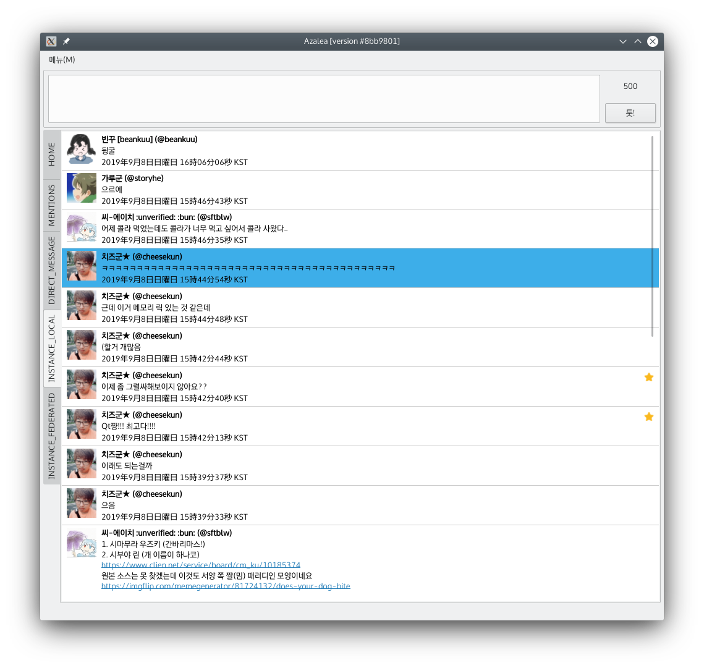

소개
Azalea는 C++/Qt5로 작성된 멀티-플랫폼 Mastodon 클라이언트입니다. tmyt(@tmyt@m6n.onsen.tech)님이 작성하신 Windows Mobile용 Twitter 클라이언트 Azurea의 Windows 버전 (Azurea for Windows)에서 영감을 받아 작성되었습니다.
제목
내용
Multi-platform Mastodon client, inspired by Azurea
Azalea는 C++/Qt5로 작성된 멀티-플랫폼 Mastodon 클라이언트입니다. tmyt(@tmyt@m6n.onsen.tech)님이 작성하신 Windows Mobile용 Twitter 클라이언트 Azurea의 Windows 버전 (Azurea for Windows)에서 영감을 받아 작성되었습니다.
내용